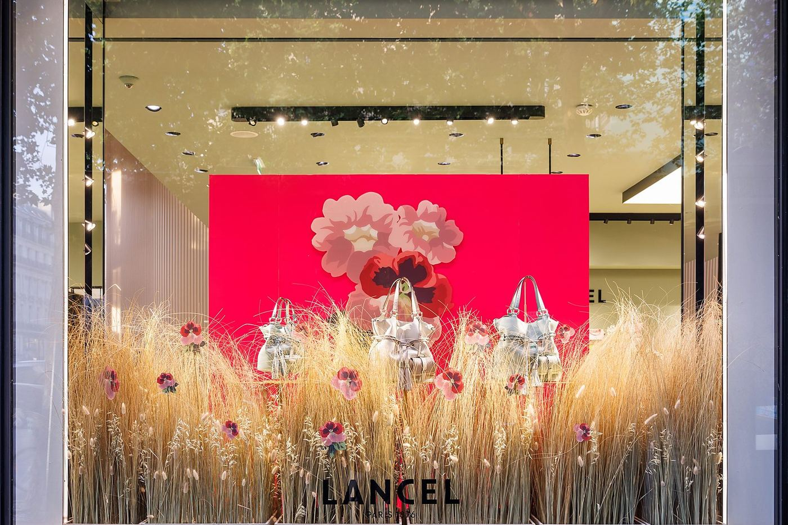

Service 02
Visual merchandising & brand presentation
Standards your teams can execute without HQ behind them. From the window on the street to the last shelf in the stockroom-fed wall.

What it covers
Every store on-brand. No exceptions, no babysitting.
- Store audits. A walk of your locations against your own standards, with photographs, gaps and priorities your teams can act on.
- The VM playbook. Guidelines for windows, product presentation, storytelling and store zones, written so a new hire can execute them on day one.
- Seasonal directives. Campaign and launch guidelines aligned to your calendar, so every market moves at the same moment.
- Team training. VM capability built in your stores, with your product, until the standard survives staff turnover.
I
Audit
Where your presentation stands today, store by store.
II
Write
The playbook and guidelines your brand has been missing.
III
Train
Your teams execute, we coach, the standard holds.
Where this comes from
Emilie wrote the official VM Brand Book at Lancel, adopted brand-wide, and the monthly guidelines that kept 50+ locations aligned to each campaign and launch through the year.
Would a customer recognise your brand in every store?
If the answer depends on which store, the standard lives in people's heads instead of on paper. We fix that.
Book an introduction